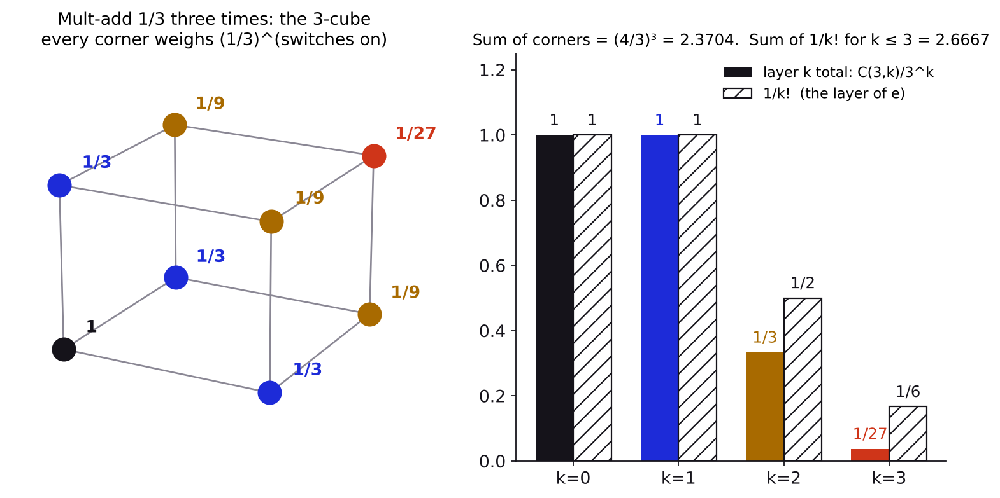
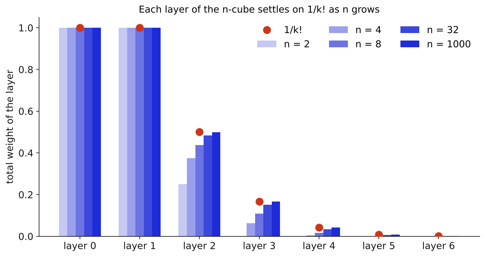
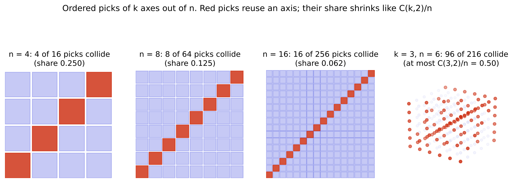
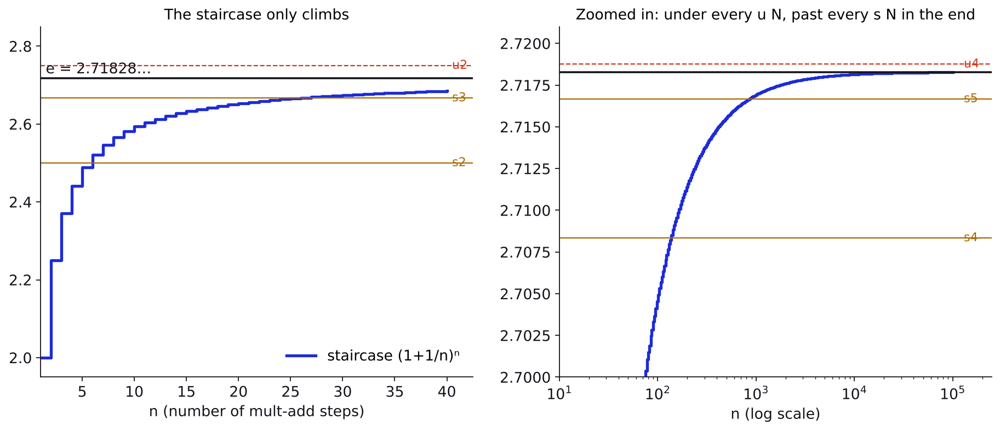
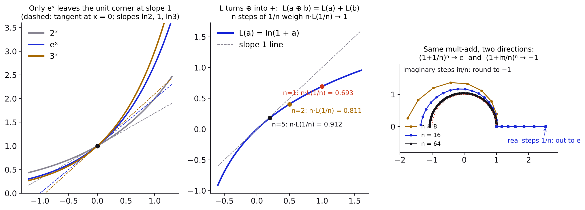

Mult-add 1/n to itself n times. That builds the n-cube with every switch weighing 1/n. As n grows, layer k of the cube settles on 1/k!, and the cube's total settles on e = 1 + 1 + 1/2 + 1/6 + … = 2.71828…
Every finite step of this is proved in core Lean with no sorry: the staircase only climbs, it never passes 3, each layer is trapped between 1/k! minus its collisions and 1/k!, and the kernel computes e to seven places. Only the final "and so they meet at one number" needs the real line, which core Lean doesn't have.

n = 3. The cube's layers (solid) against e's layers (hatched). The first two already match; the higher ones are short because some picks collide.
Mult-add is a ⊕ b = a + b + ab = (1 + a)(1 + b) − 1. Mult-adding x to itself n times gives
Geometrically that's a box of side 1 + x in n dimensions, cut at 1 on every axis. It falls into the 2ⁿ corner pieces of the n-cube. A corner with k switches on is a block of size xᵏ, and there are C(n,k) of them. Those layers are your Pascal rows 1, 3, 3, 1 and so on.
Now spend exactly one whole unit, cut into n equal slices: x = 1/n. Put the unit corner back and you get the staircase
So layer k of the n-cube carries total weight C(n,k)/nᵏ. The whole question of e is what each layer does as n grows.
Write the layer's weight out:
The k! counts the orders you can switch the same k axes on. The product after it is the share of ordered picks that use k different axes. As n grows every factor goes to 1, so the layer goes to 1/k!.
Adding the limits layer by layer gives
Layer 0 is the unit corner. Layer 1 is the single slices, which add back to exactly the one unit you spent. Layer 2 is pairs of slices, worth 1/2. Layer 3 is triples, worth 1/6. The interest-on-interest of compound growth is literally the higher layers of the cube.

Layers 0 to 6 for n = 2, 4, 8, 32 and 1000. Red dots are 1/k!.
Why is a layer short of 1/k! at finite n? Picking k slices in order has nᵏ outcomes. The ones that pick the same slice twice don't make a corner; they collide. Distinct ordered picks number n(n−1)…(n−k+1), and that is exactly C(n,k)·k!.

k = 2: the red diagonal is the collisions, a share of 1/n. k = 3: the collisions are the three diagonal planes, a share at most C(3,2)/n.
Every collision has a pair of picks that agree, and there are only C(k,2) pairs to check, each agreeing with chance 1/n. So at most C(k,2)/n of the ordered picks collide, and
Both sides are proved in Lean (wt_ge, wt_le). This is the geometric underpinning you asked for: e is the cube's corner count once the collisions, a thin diagonal set, have shrunk to nothing.

Gold lines are the partial sums s N of 1/k!; red dashed lines are u N = s N + 1/(N!·N). e sits between every pair.

Left: the slope-1 point. Middle: the map that turns mult-add into adding. Right: the same build in two directions.
The map L(a) = ln(1 + a) turns mult-add into plain adding: L(a ⊕ b) = L(a) + L(b). Its inverse is E(t) = eᵗ − 1. So n mult-adds of x are E(n·L(x)).
With x = 1/n, the weight is n·L(1/n). Near the unit corner L has slope 1, so tiny slices keep their full value and n·L(1/n) → 1. The build lands on E(1) = e − 1. Any other base would give the curve a slope other than 1 at the corner, and the slices would come out scaled. e is the one base where a tiny mult-add step and a tiny plain step are the same size.
m steps then n steps is m + n steps: mult-adding x m times and x n times, then mult-adding the two results, is the same as mult-adding x m + n times (mpow_add, proved). In the limit that's eᵃ·eᵇ = eᵃ⁺ᵇ, read off the cube: an (m+n)-cube is an m-cube times an n-cube.
Point the slices along i instead: (1 + iπ/n)ⁿ curls round a half circle to −1. That's the Euler identity proof from before, the same build in a perpendicular direction. Real slices grow the box; imaginary slices turn it. Together they're the helix.
File: math-theory/e/EFromMultAdd.lean (609 lines). Core Lean 4.37, no mathlib, no sorry, no warnings, only Lean's three standard axioms. Built on the rationals, which are in core Lean.
| Theorem | What it says |
|---|---|
| mpow_eq, mpow_add | n mult-adds of x make (1 + x)ⁿ − 1, and mult-add powers add like exponents. |
| binomial | (1 + x)ⁿ = Σ C(n,k)·xᵏ: the cube's corners fill the box. |
| layer_mul_fact | C(n,k)·k! = n(n−1)…(n−k+1), the distinct ordered picks. |
| collisions | Ordered picks that reuse an axis number at most C(k,2)·nᵏ⁻¹. |
| wt_le, wt_ge | Layer k weighs between 1/k! − C(k,2)/(n·k!) and 1/k!. |
| bernoulli, stair_lt_succ | The staircase strictly climbs. |
| stair_le_s, s_lt_three | (1 + 1/n)ⁿ ≤ 1/0! + … + 1/n! < 3. |
| u_step, stair_le_u | The ceiling u N only comes down; the staircase is under every u N. |
| s_le_stair | For n ≥ N the staircase is at least s N − 3·C(N,2)/n. |
| kernel checks | 2.7182818 < s 10 and u 10 < 2.7182819; layer 3 of the 100-cube is 4851/30000. |
Not in Lean: core Lean has no real numbers, so "the staircase and the sums close on one number" is the completeness of the real line, a fact about limits rather than about the cube. Every statement short of that is proved, including the ε-bounds that say they close.
Known: all of the mathematics. (1 + 1/n)ⁿ → e is Jacob Bernoulli's compound interest (1683); e = Σ 1/k! is Euler (1748); the layer-by-layer limit is the standard textbook proof (Tannery's theorem); the collision count is the usual birthday-problem bound.
New here: the reading on your mult-add cube, where e is the corner count of the infinitely sliced unit cube and its gap at finite n is exactly the diagonal collision set, plus a complete check in core Lean with no library. No new theorem.
Files: EFromMultAdd.lean, figures.py and figures/ in math-theory/e.